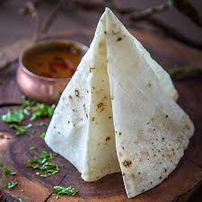

Return Home
Rumali Roti

Description
If there’s one flatbread in India, which is as popular as the Naan, it is the Rumali Roti.
I mean imagine dunking portions of this roti in your favorite curry or gravy or pairing it with a delicious
tandoori dish, and having it. Isn’t this mention only enough to make you salivate?
So basically, a Rumali Roti is one of the well-known unleavened Indian flatbreads that traditionally
belongs to the Mughlai, Hyderabadi or Awadhi food cultures. A lesser-known fact about this roti is that
it is also known as ‘manda.’ Other names include the Punjabi ‘lamboo roti’ and even the Caribbean
‘dosti roti.’
Ingredients Required
- ▢ 2 cup maida / plain flour
- ¼ cup wheat flour / atta
- 1 tsp salt
- 2 tbsp oil
- 1 cup milk, or as required
Step-Wise Instruction to follow :
- firstly, in a large bowl take 2 cup maida, ¼ cup wheat flour and 1 tsp salt.
- mix well making sure everything is well combined.
- now add ¾ cup milk and mix well.
- start to knead adding milk as required.
- form a sticky dough, adding milk as required.
- now add 2 tbsp oil and continue to knead for 5 minutes.
- knead to a smooth and non-sticky dough.
- grease the dough and rest for 4 hours. make sure to rest the dough well, else you may end with chewy
rumali roti.
- after 4 hours, knead the dough again. pinch a ball sized dough.
- dust with maida and roll gently.
- roll as thin as possible, dusting maida to prevent from sticking
- now heat the kadai in high flame for 2 minutes.
- now heat the kadai in high flame for 2 minutes.
- flip over and sprinkle saltwater. saltwater helps to make a non-stick coating to the kadai.
- take the rolled roti and stretch gently.
- make sure the roti turns translucent (the hand should be clearly visible).
- place over the hot kadai. make sure to keep the flame on from the bottom.
- cook until the bubbles start to appear.
- flip over and press cooking on all the sides.
- finally, fold rumali roti and enjoy immediately with curry.